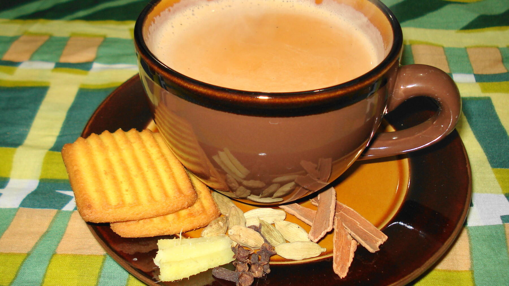

Zurück zur Übersicht
Masala-Chai-Konzentrat
Geröstete Gewürze, frischer Ingwer und Schwarztee als Konzentrat, das mit heißer Milch aufgegossen wird. Ergibt 1 Liter Konzentrat, eine Portion entspricht einer großen Tasse (125 ml Konzentrat und 125 ml Milch).
- Zeit
- 30 Min.
- Schwierigkeit
- leicht
- Kategorie
- Getränke
- Ernährung
- vegan
Zutaten
Portionen
- 15grüne Kardamomkapseln (oder 6 schwarze)
- 4Zimtstangen (16 g)
- 10 gschwarzer Pfeffer (ganz)
- 12Nelken
- ¼ TLMuskatnuss, gerieben
- 2Streifen Orangenschale (optional)
- 55 gbrauner Zucker
- 45 gfrischer Ingwer
- 23 gloser Schwarztee
- 1 lgefiltertes Wasser
- Milch zum Aufgießen
Zubereitung
- Die Zimtstangen im Mörser grob zerkleinern und den Ingwer grob hacken. Zimt, Kardamom, Pfeffer und Nelken 6–8 Minuten bei 180 °C im Ofen rösten.
- Das Wasser mit allen Gewürzen, Ingwer, Orangenschale und Zucker in einen Topf geben, also mit allem außer dem Schwarztee. Zum Kochen bringen, sofort herunterschalten und bei schwacher Hitze 10 Minuten köcheln lassen.
- Vom Herd nehmen, 30 Sekunden warten, dann den Schwarztee dazugeben und 4–5 Minuten ziehen lassen.
- Das Konzentrat durch ein Sieb gießen.
- Zum Trinken das Konzentrat 1 zu 1 mit warmer oder heißer Milch mischen.
Tipp: Kardamom geht auch gemischt (4 schwarze und 9 grüne Kapseln) oder gemahlen: etwa 2 g, das sind ungefähr 15 Messerspitzen.